Chapter 10: Redundant Amino Acid Coupling Side Reactions
Chapter 10: Redundant Amino Acid Coupling Side Reactions
冗余氨基酸偶联副反应
10.0 本章概述
在多肽固相合成中，不完全偶联会导致缺失序列杂质。但另一方面，冗余氨基酸偶联（redundant amino acid coupling）也是一种常见的副反应，会导致肽链中出现不期望的重复氨基酸序列。 冗余氨基酸偶联的来源包括： 1. 氨基酸原料中的二肽杂质（Fmoc保护过程中的副产物） 2. Fmoc过早脱保护（premature Fmoc deprotection） 3. CTC树脂的酸解导致二聚体形成 4. NCA（N-羧基环内酸酐）的形成 其中，Gly的冗余偶联尤其棘手，因为Gly-HCl难以通过HPLC分离。
10.1 氨基酸Nα-Fmoc保护过程中的二肽形成
Fmoc-Cl是最常用的氨基酸Nα-Fmoc保护试剂。在Schotten-Baumann条件下，Fmoc-Cl与Nα未保护的氨基酸反应生成Fmoc-Xaa-OH。 但Fmoc-Cl存在一个严重问题：可能形成二肽甚至三肽杂质。机理如下： Fmoc-Xaa-OH可以与过量的Fmoc-Cl继续反应生成混合酸酐1，后者被未反应的H-Xaa-OH亲核攻击，形成二肽Fmoc-Xaa-Xaa-OH（2）。或者Fmoc-Cl先与H-Xaa-OH形成混合酸酐3，再经Fmoc-Cl衍生化后转化为二肽。 空间位阻小的氨基酸（如Gly、Ala）更容易形成二肽杂质。
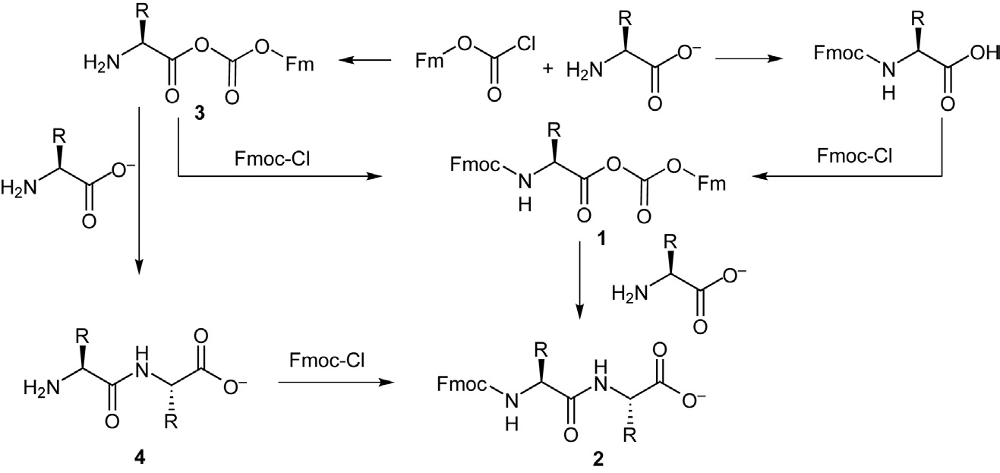
Figure 10.1 Fmoc-Cl介导的氨基酸Nα-Fmoc保护反应

Figure 10.2 Fmoc-Cl保护过程中的二肽形成机理

Page 235 补充图
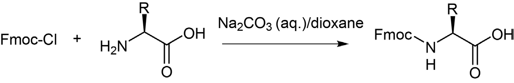
Page 235 补充图
解决方案： - 使用反应活性较低的Fmoc衍生化试剂：Fmoc-N₃和Fmoc-OSu - Fmoc-N₃：活性太低，实际应用受限 - Fmoc-OSu：可通过Lossen重排形成Fmoc-β-Ala-OH杂质（见Chapter 5.6和7.5） - Fmoc-2-MBT：活性低于Fmoc-OSu，可有效抑制二肽形成，副产物2-MBT易于分离 - 固相Fmoc-OBt：将HOBt固载化后与Fmoc-Cl反应，生成的固相Fmoc-OBt与氨基酸反应释放产物，可完全避免二肽形成 - 调整反应配比：增加氨基酸/Fmoc试剂的比例可抑制混合酸酐形成

Figure 10.3 Fmoc-2-MBT结构
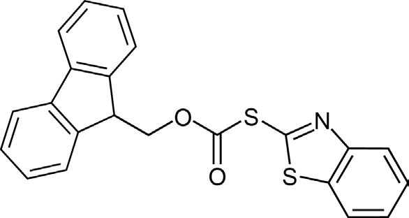
Page 236 补充图
10.2 Fmoc过早脱保护导致的冗余偶联
Fmoc保护基在碱性条件下去除（通常用20%哌啶/DMF）。但某些条件下，Fmoc可能在偶联步骤中过早脱除，导致同一个氨基酸被偶联两次。 过早脱保护的原因包括： 1. 偶联试剂的碱性（如DIEA） 2. 胺类杂质的存在 3. 溶剂中的胺类污染（如DMF降解产生的二甲胺） 当Fmoc在偶联过程中过早脱除后，裸露的Nα-氨基与新加入的活化氨基酸反应，形成冗余的二肽序列。
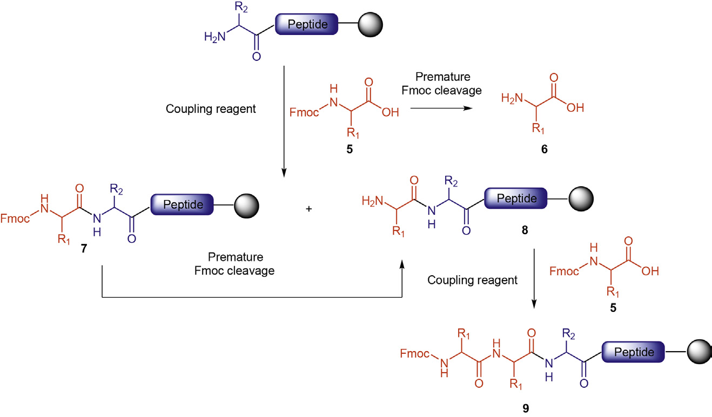
Fmoc过早脱保护机理示意图

Figure 10.4 相关机理图
10.3 其他冗余偶联来源
NCA（N-carboxyanhydride）形成：在某些条件下，活化的氨基酸可形成NCA，NCA具有两个反应位点，可导致冗余偶联。 CTC（2-chlorotrityl chloride）树脂的酸解：CTC树脂在酸性条件下释放肽链时，可能发生分子间偶联，形成二聚体。 DMF中的胺类污染：DMF在储存过程中可降解产生二甲胺，二甲胺可能导致Fmoc过早脱保护。
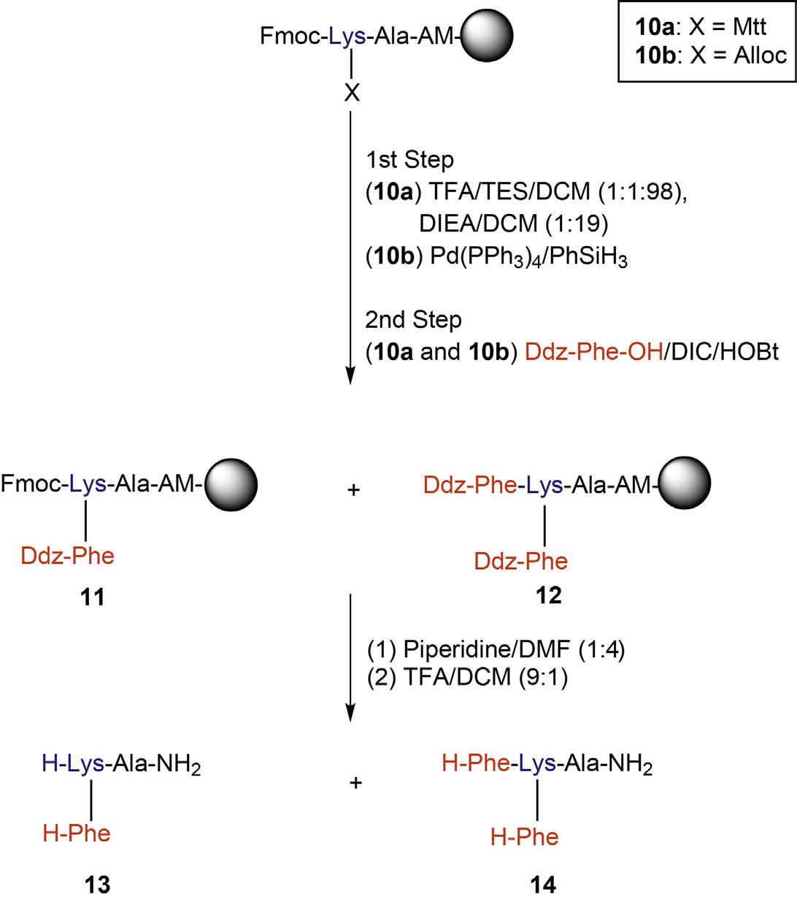
NCA形成机理

Figure 10.5 相关机理图
10.4 Gly冗余偶联的特殊问题
Gly的冗余偶联是最难处理的副反应之一，原因： - Gly没有侧链，空间位阻最小，最容易发生冗余偶联 - Gly-HCl（质谱+58 Da或+72 Da杂质）在常规HPLC条件下难以与目标肽分离 - Gly的缺失/冗余序列在RP-HPLC上共洗脱 检测策略： - 使用MS检测确认是否有Gly冗余 - 优化偶联条件减少冗余Gly引入
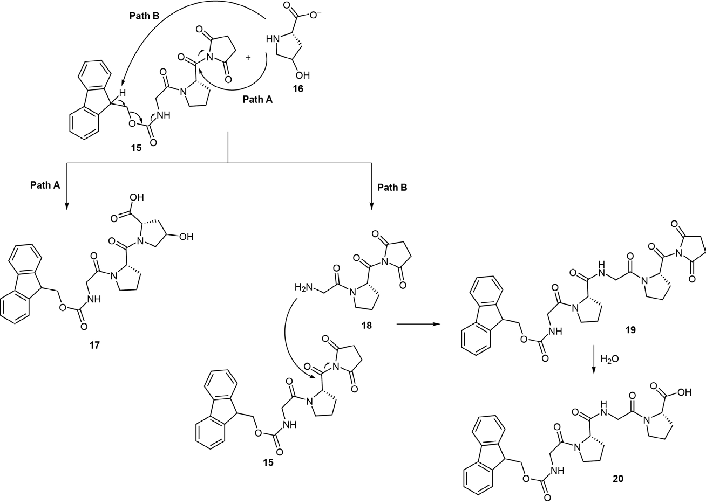
Gly冗余偶联
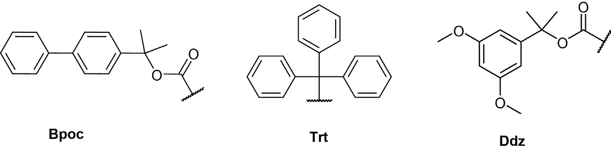
Gly冗余偶联补充

Figure 10.6 Gly冗余偶联相关图

Figure 10.7 相关机理图
10.5 预防策略总结
预防和控制冗余氨基酸偶联的策略： 1. **原料质量控制** - 使用高质量Fmoc-AA-OH原料 - 优先选择用Fmoc-OSu或Fmoc-2-MBT保护的氨基酸 - 必要时对原料进行HPLC检测 2. **优化偶联条件** - 控制偶联试剂用量（避免过量） - 缩短偶联时间 - 选择合适的溶剂系统 3. **防止Fmoc过早脱保护** - 使用新鲜DMF（避免二甲胺污染） - 控制DIEA用量 - 避免长时间暴露在碱性环境中 4. **树脂选择** - CTC树脂使用时注意酸解条件 - 控制酸解时间和浓度 5. **检测和纯化** - MS检测确认冗余序列 - 对于Gly冗余，可能需要特殊色谱条件

预防策略相关图
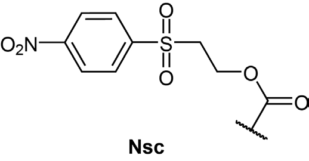
Figure 10.8 相关图
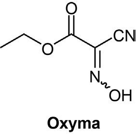
补充图

Figure 10.9 相关图
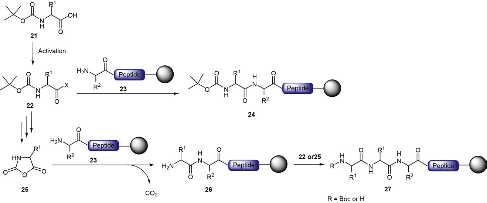
Page 249 图

Figure 10.10

Page 250 图
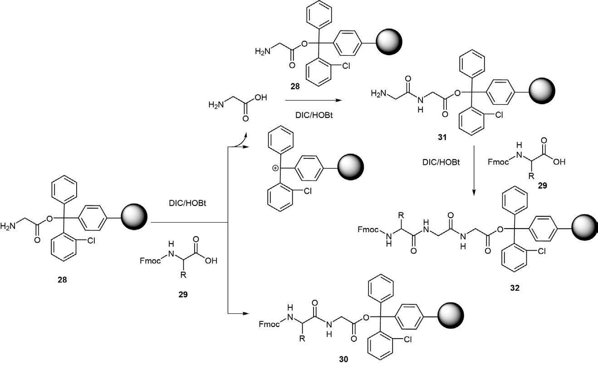
Figure 10.11

Page 253 图
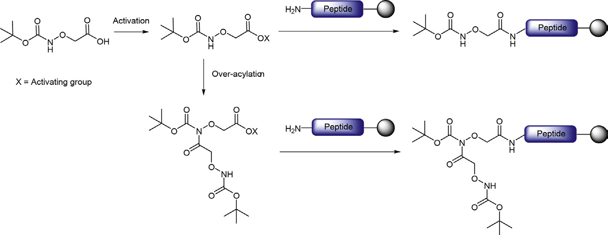
Figure 10.12
关键要点
✅ 冗余氨基酸偶联是多肽合成中的常见副反应 ✅ Fmoc-Cl保护过程可产生二肽杂质（Gly、Ala最易受影响） ✅ Fmoc过早脱保护是冗余偶联的主要原因之一 ✅ CTC树脂酸解和NCA形成也可导致冗余偶联 ✅ Gly冗余最难处理（HPLC难分离） ✅ 预防关键：原料质量、偶联条件优化、防止过早脱保护 ✅ 替代Fmoc-Cl的试剂：Fmoc-OSu、Fmoc-2-MBT、固相Fmoc-OBt